25 chân dung võ hồn v2 Đối chiếu thành phẩm 1× và thẻ ghép thử với khung SSR sẵn có (minh họa cửa sổ chân dung, không phải ảnh chụp game). Chân dung: đủ 25/25. Icon: có nguồn 25/25, chưa nhập vì giới hạn bộ nhập; xem bảng đủ / thiếu . Các cảnh báo mỹ thuật NHẸ giữ nguyên trong hồ sơ nguồn.
1. Cửu Tinh Thất Sát Kiếm 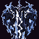
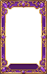
portrait2 · 64×64 · 16 màu Nguồn / duyệt mắt 2. Lam Điện Bá Vương Long 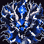
portrait2 · 64×64 · 16 màu Nguồn / duyệt mắt 3. Kỳ Nhung Thông Thiên Cúc portrait2 · 64×64 · 16 màu Nguồn / duyệt mắt 4. Tà Hỏa Phượng Hoàng 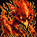
portrait2 · 64×64 · 16 màu Nguồn / duyệt mắt 19. Hạo Thiên Chùy portrait2 · 64×64 · 16 màu Nguồn / duyệt mắt 21. Phá Hồn Thương 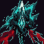
portrait2 · 64×64 · 16 màu Nguồn / duyệt mắt 25. Bạch Hổ portrait2 · 64×64 · 16 màu Nguồn / duyệt mắt 5. U Minh Linh Miêu 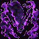
portrait2 · 64×64 · 16 màu Nguồn / duyệt mắt 6. Nguyệt Nhận portrait2 · 64×64 · 16 màu Nguồn / duyệt mắt 7. Hỏa Long portrait2 · 64×64 · 16 màu Nguồn / duyệt mắt 8. Nhu Cốt Thố portrait2 · 64×64 · 16 màu Nguồn / duyệt mắt 9. Kim Vũ Miêu Ưng portrait2 · 64×64 · 16 màu Nguồn / duyệt mắt 23. Liệt Hỏa Thương Lang 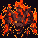
portrait2 · 64×64 · 16 màu Nguồn / duyệt mắt 10. Tử Vong Chu Hoàng portrait2 · 64×64 · 16 màu Nguồn / duyệt mắt 11. Bích Lân Xà Hoàng portrait2 · 64×64 · 16 màu Nguồn / duyệt mắt 12. Càn Khôn Hỗn Nguyên Tỏa portrait2 · 64×64 · 16 màu Nguồn / duyệt mắt 13. Hỏa Ảnh portrait2 · 64×64 · 16 màu Nguồn / duyệt mắt 14. Yêu Hồ portrait2 · 64×64 · 16 màu Nguồn / duyệt mắt 18. Lam Ngân Thảo portrait2 · 64×64 · 16 màu Nguồn / duyệt mắt 24. Băng Phượng Hoàng 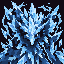
portrait2 · 64×64 · 16 màu Nguồn / duyệt mắt 15. Xúc Xích 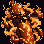
portrait2 · 64×64 · 16 màu Nguồn / duyệt mắt 16. Quỷ Mị 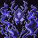
portrait2 · 64×64 · 16 màu Nguồn / duyệt mắt 17. Thiên Càn Bạch Ngọc Đỉnh 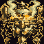
portrait2 · 64×64 · 16 màu Nguồn / duyệt mắt 20. Cửu Bảo Lưu Ly Tháp portrait2 · 64×64 · 16 màu Nguồn / duyệt mắt 22. A Ngân 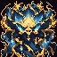
portrait2 · 64×64 · 16 màu Nguồn / duyệt mắt